Reimagining Workleap: A Platform from the Ground Up
How 3 designers unified a fragmented HR platform: IA, navigation, design system, and a working code prototype in 6 weeks.
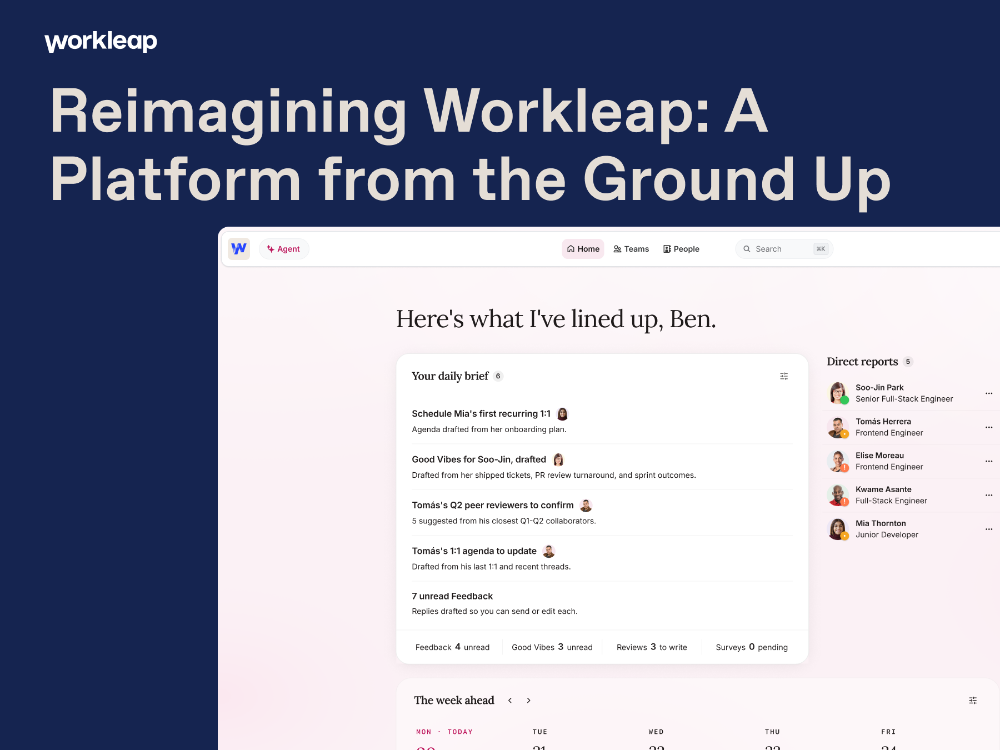
TL;DR
I co-led the end-to-end redesign of Workleap as one platform: information architecture, navigation, settings, and core UI patterns. I shipped a working Next.js prototype that became the source of truth for stakeholder alignment, engineering scope, and downstream design. WCAG 2.2 AA was the floor, AAA the target. AI-augmented prototyping made the timeline possible.
The Challenge
Workleap, a B2B SaaS HR platform, had grown into a constellation of products, each with its own navigation, settings, terminology, and visual logic. The brief: unify it all into one platform. The guidance: vague. The timeline: tight.
I was given a strategic ambition and asked to shape it into something concrete enough to align stakeholders, validate with users, and hand to engineering, all within a window typically reserved for a single feature, not a platform redesign.
Why it mattered
Platform consolidation isn't just a UX problem. It's a retention and revenue problem. Fragmented tools create fragmented habits; users who don't discover cross-product value churn. This redesign was the foundation for Workleap's positioning as a unified people management platform rather than a bundle of separate tools. Getting the IA right wasn't a craft exercise; it was a product bet.
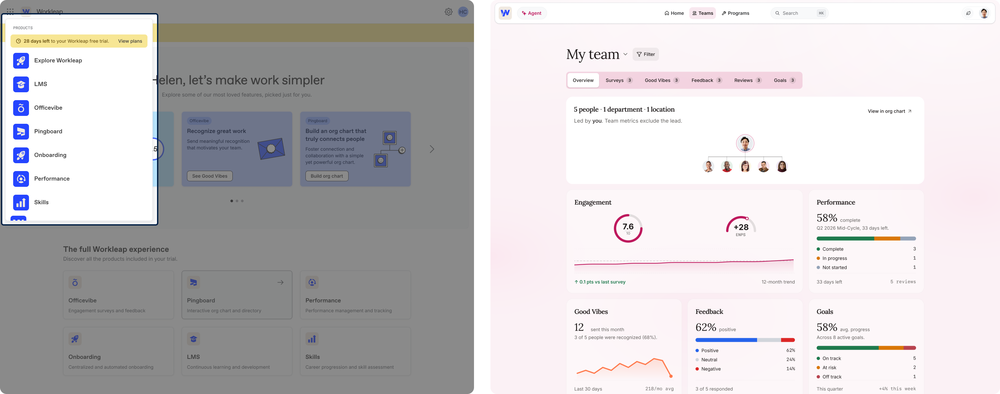
Before: fragmented product silos with drifting UI patterns, duplicated settings, and no cross-product support. After: a single global nav carries users across a unified shell.
My Role & Scope
I co-led this redesign with another principal-level product designer and a Senior Design Manager. With no dedicated PM, I also held the strategic alignment work: facilitating stakeholder reviews, making scope calls, and keeping the team oriented on what mattered for the demo. I owned platform IA, global navigation, and settings (including compensation), and collaborated on the rest:
- End-to-end information architecture for the unified platform
- Navigation model spanning multiple products and user roles
- Settings architecture, org settings, compensation, and the connective tissue most teams skip or punt
- Collaborated on core UI patterns: tab navigation, dashboards, data tables, import flows, methodology disclosures
- Collaborated on a full design system evolution to support the shift to an AI-first product
- A working Next.js prototype built through AI-directed development
- Accessibility standards (WCAG 2.2 AA, AAA where possible) baked in from day one
Approach
1. Translate vague into concrete
I reframed the brief into a set of explicit design questions and constraints. What does "unified" actually mean for users? Which surfaces are load-bearing? Which can wait? I documented assumptions, surfaced tradeoffs, and earned alignment before any pixels were pushed.

2. Research the landscape
I ran competitive teardowns of HubSpot, Rippling, Salesforce, and Airtable, studying how mature B2B platforms handle multi-product navigation, settings, and admin surfaces. I paired that with NN/g heuristic evaluation and audits of current Workleap usage, weighing both, but knowing current behavior reflects today's silos, not tomorrow's potential.
The teardowns revealed a consistent pattern among mature platforms: global nav with clear admin separation, persistent context across products, and settings structured by persona, not feature area. That became the model.
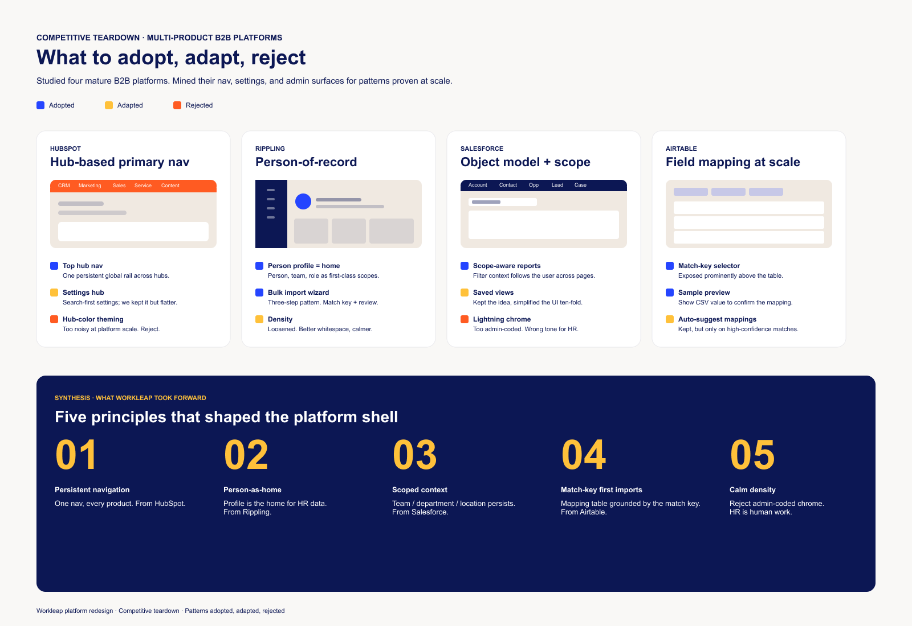
3. Architect the platform
IA was the keystone. I redesigned the global navigation, settings hierarchy, and product-to-product transitions so a single mental model could carry users across previously walled-off surfaces.
The hardest call was settings. Each product had grown its own settings surface independently: duplicated controls, conflicting terminology, no shared model. I had to decide whether to normalize everything at once or layer in a global shell while leaving product-level settings in place. I chose the latter: a two-tier model with global admin at the top and product configuration nested underneath. It was the less elegant solution on paper, but the one engineering could actually scope and ship incrementally.
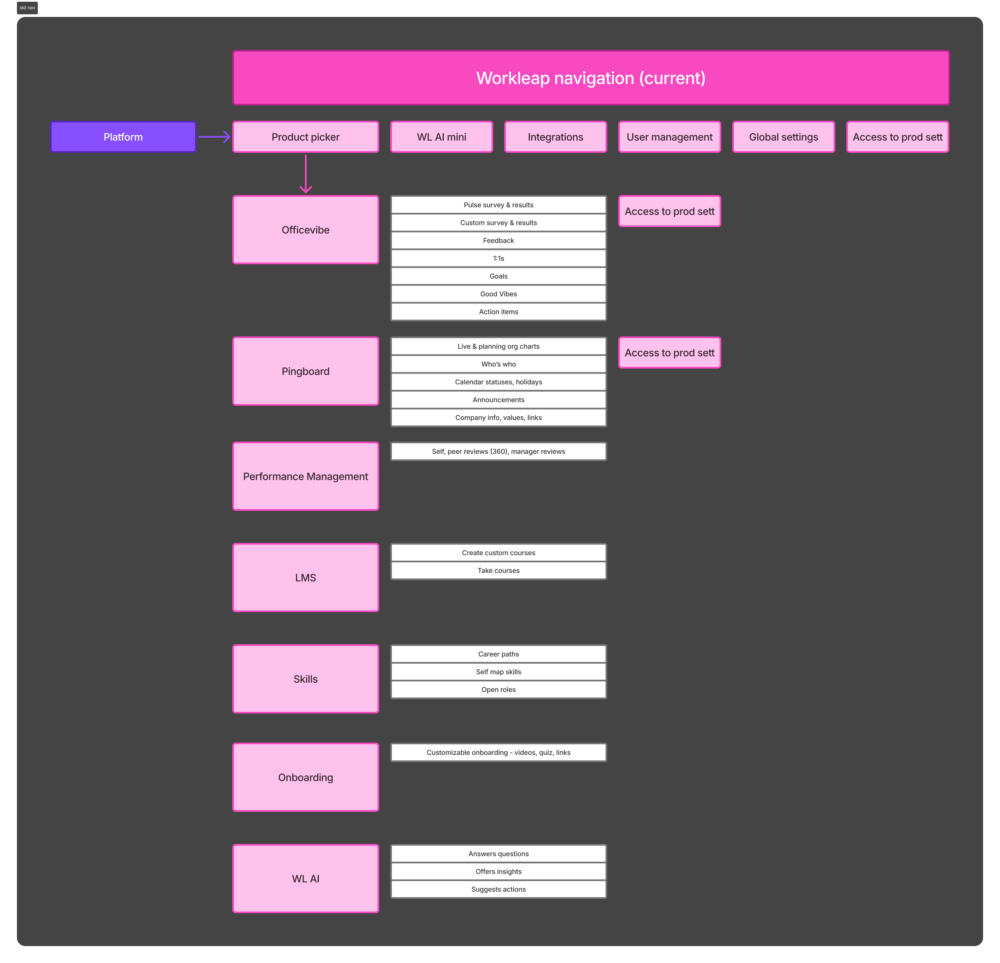
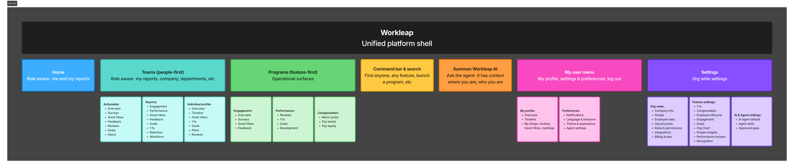
4. Design the system, not the screen
Rather than designing screens in isolation, I established reusable patterns first (widget cards, segmented controls, tab navigation, methodology disclosures), then composed flows from them. Every pattern was documented with usage rules, props, and accessibility specs.
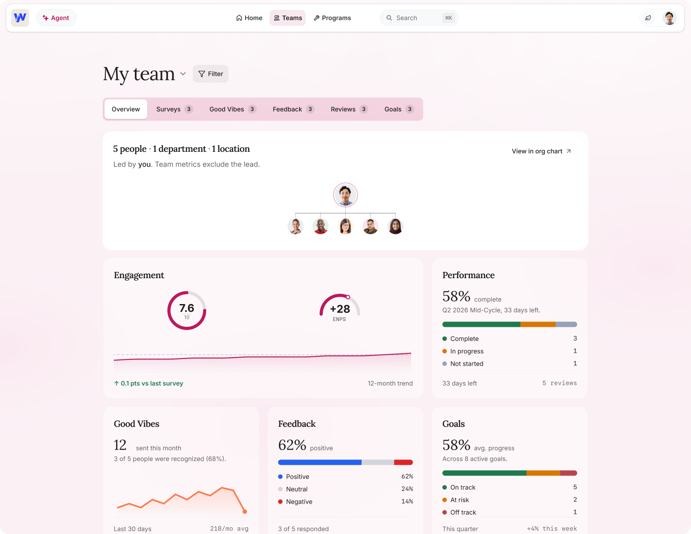
5. Prototype in working code
I directed an AI agent to build a production-quality Next.js prototype of the new platform, with real interactions, dark mode, responsive behavior, and live data. Not a clickable Figma flow: working software stakeholders could actually use it. This collapsed the discovery-to-validation cycle by an order of magnitude and gave engineering a concrete reference to scope against.
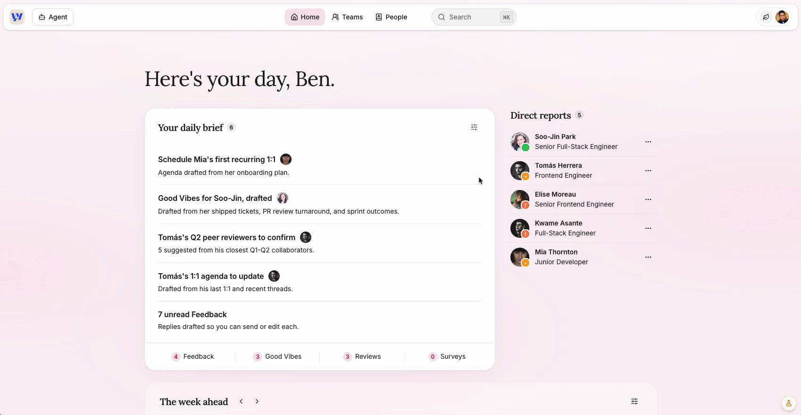
6. Build for everyone
Every pattern was checked against WCAG 2.2 AA, with AAA targeted where possible: 7:1 contrast on body copy, 44px touch targets, focus-visible rings, full keyboard navigability, screen-reader semantics, and never conveying meaning by color alone. I built out documentation for the dev team to use Intent UI, ensuring accessibility was a priority from day one, not a pass at the end.
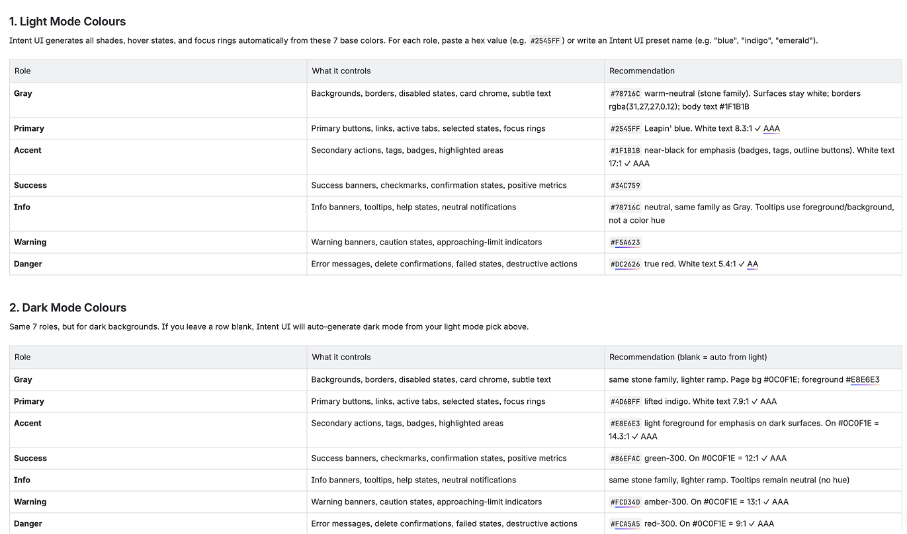
Selected Work
Agent-powered dashboard
The new home surface. Widget cards surface key metrics with editorial typography; sensitive metrics include a "How is this calculated?" disclosure pattern instead of always-visible banners.
The "How is this calculated?" disclosure pattern was a deliberate trust decision: rather than hiding methodology or surfacing it with always-visible banners that create noise, we made transparency on-demand. Users who need to understand the number can; users who trust it can move on.
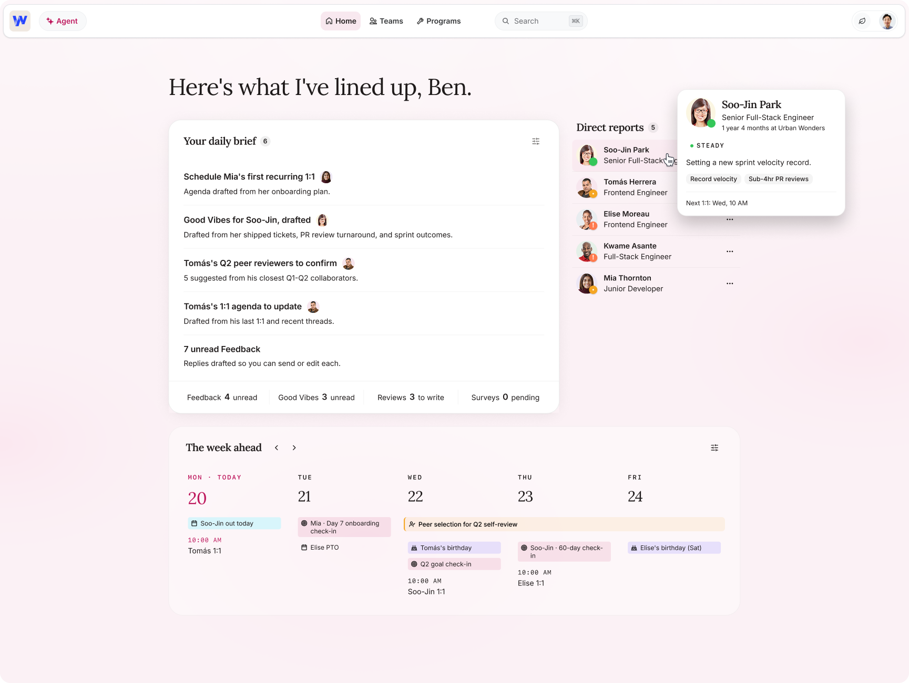
Settings → People → Import flow
A three-step wizard for bulk-importing employee data. Solved for ambiguity around update behavior, field mapping at scale, and error visibility before commit.
The three-step wizard was scoped specifically to solve for the moment of highest anxiety: "what happens to existing data?" Error visibility before commit, not after, was the core design principle. Users needed to see conflicts before they caused damage, not discover them in a support ticket.
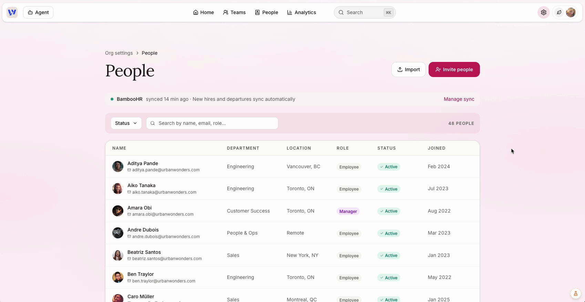
Compensation, redesigned end-to-end
Rebuilt the product from the ground up to reduce ramp-up time and cognitive load. Designed sensitive-data surfaces with health cards, methodology disclosures, and segment controls for cutting data by gender or ethnicity. Designed to inform without overwhelming.
This surface handles some of the most sensitive data an HR platform can hold. The design challenge wasn't making it powerful, it was making it trustworthy. Segment controls for cutting by gender or ethnicity required careful thought about how to present disparity data without inadvertently stigmatizing groups or creating legal exposure for customers.
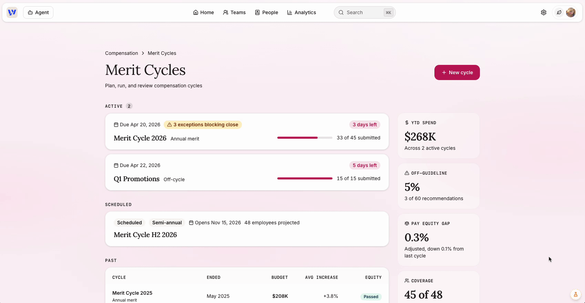
Results & Impact
- A working, end-to-end vision prototype that became the source of truth for stakeholder alignment, engineering scoping, and downstream design work.
- The prototype has become the foundation for Q3 roadmap planning.
- A documented IA model and component pattern library the broader design team can build against.
- A new internal capability: AI-augmented prototyping as a repeatable design practice, validated through this project.
- The prototype was presented company-wide in May 2026. Engineering is actively scoping the build now, with a roadmap in place. Early market validation is promising: the manager agent concept the prototype helped define has already generated two new sales.
Reflection
Working without a PM meant holding the design vision and the strategic alignment work at the same time, and deciding what mattered for the demo versus what could be deferred. That muscle strengthened through this project in ways I wouldn't have gotten otherwise.
If I were doing it again, I'd have forced at least two structured user touchpoints earlier, even lightweight ones. The most ambiguous flows (cross-product navigation for users who only use one product, settings for mixed admin/manager roles) would have benefited from even a single session before we locked the prototype. The tradeoff was real: we needed working software by a fixed date, and user research takes time. I made the call to move; I'd make it earlier next time.
Skills Applied
Strategy & research: UX strategy, information architecture, competitive analysis, heuristic evaluation (NN/g), discovery, synthesis, scoping under ambiguity.
Design craft: Interaction design, visual design, component pattern design, settings and admin UX, navigation design, dashboard design, data visualization, microcopy.
Systems & scale: Design systems, design tokens, component architecture, dark mode and theming, responsive design.
AI-augmented practice: AI-directed prototyping, prompt engineering, agentic workflow design, AI design partnership.
Accessibility: WCAG 2.2 AA and AAA, inclusive and universal design, keyboard navigation, screen-reader semantics, color contrast standards.
Cross-functional: Stakeholder alignment, design QA, partnering with engineering, facilitation.